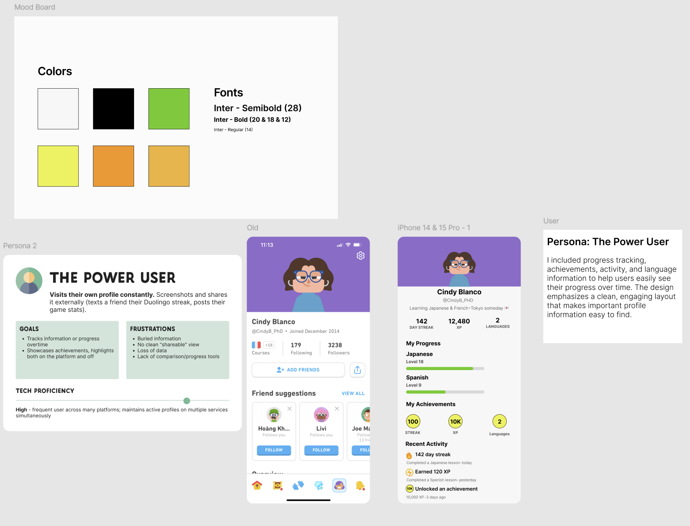
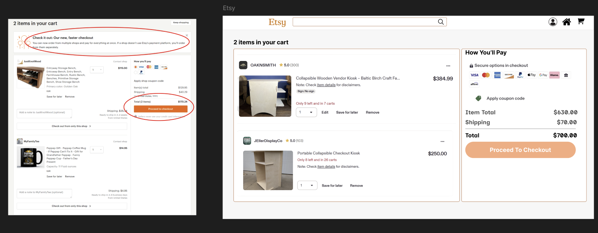

A design bootcamp at Georgia Tech where I practice interface design in Figma each week. The work below is where I apply it: redesigning real product screens and studying how strong interfaces are put together.

Apple design study. I rebuilt an Apple-style interface in Figma to study how its layouts handle spacing, hierarchy, and consistency. Recreating it closely made me pay attention to the small decisions that make an interface feel calm and organized.

Duolingo profile redesign. I wrote a user persona first, then redesigned Duolingo's profile pages around it. The before and after shows how I reorganized the layout and hierarchy so a user's progress and key stats are easier to find. Starting from the persona kept the changes tied to what that user actually needs to see.

Etsy checkout redesign. I rebuilt an Etsy checkout screen in Figma using Auto Layout so the components stay responsive and easy to adjust. The result is a cleaner checkout with clearer structure, shown next to the original. Auto Layout kept the spacing consistent as I iterated.
I joined Bits of Good's Figma bootcamp at Georgia Tech to build hands-on interface and visual design skills.
Work through weekly Figma exercises covering layouts, components, and visual hierarchy, and apply them to real product screens.
I recreated an Apple-style interface, redesigned Duolingo's profile pages from a user persona, and rebuilt an Etsy checkout with Auto Layout, while following current UI patterns.
A set of interface redesigns that show cleaner layouts and clearer hierarchy, and a stronger grasp of how to structure a design in Figma.
- 🍎 Recreated an Apple-style interface to study layout and hierarchy
- 🦉 Redesigned Duolingo profile pages from a user persona (before and after)
- 🛒 Rebuilt an Etsy checkout screen using Auto Layout
- 🔎 Applied current UI patterns from the weekly exercises